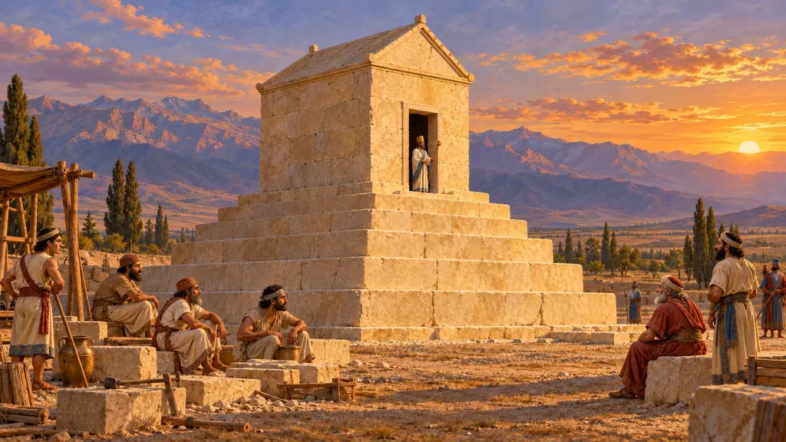
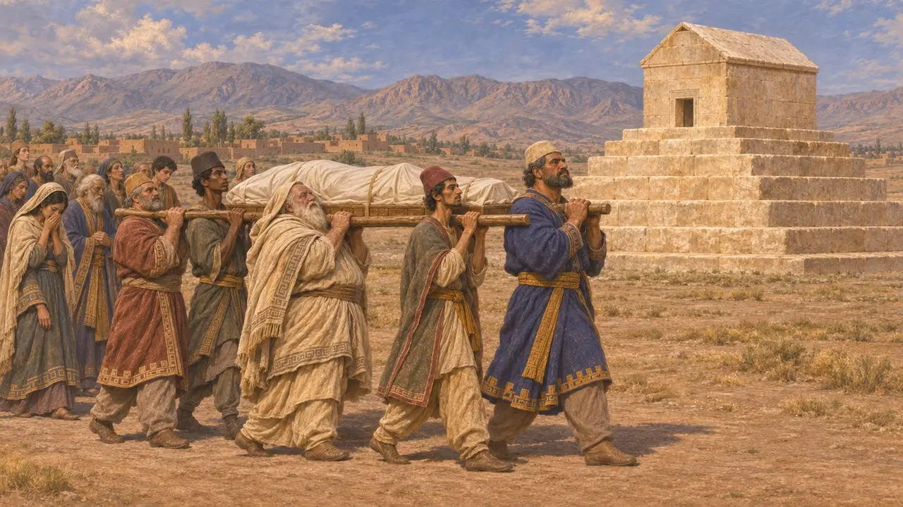
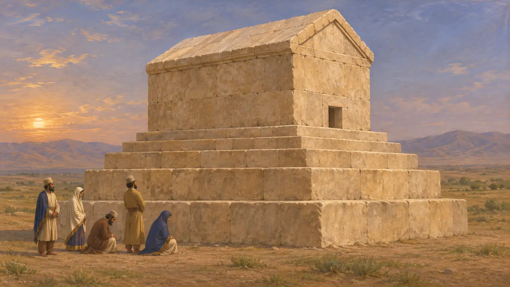
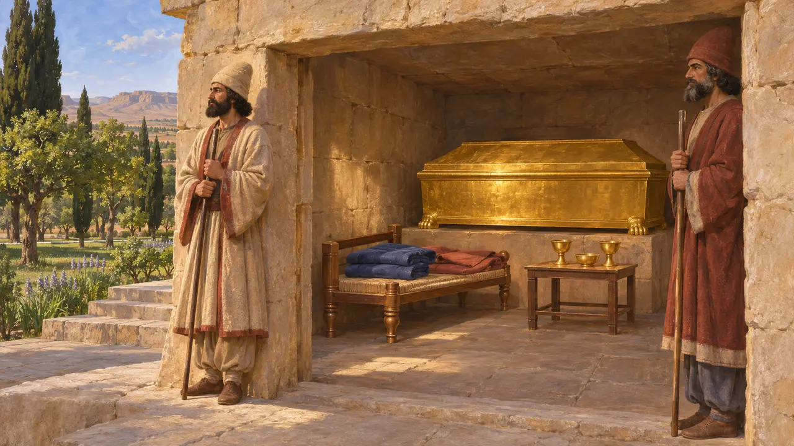
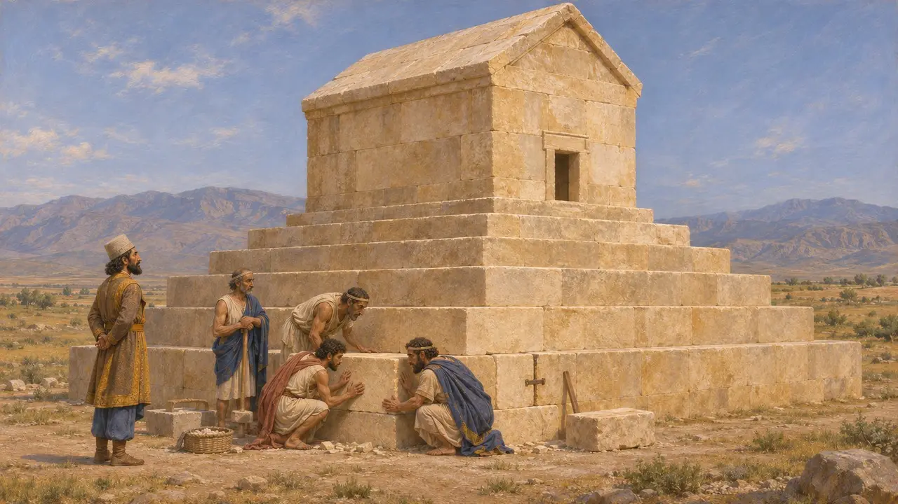
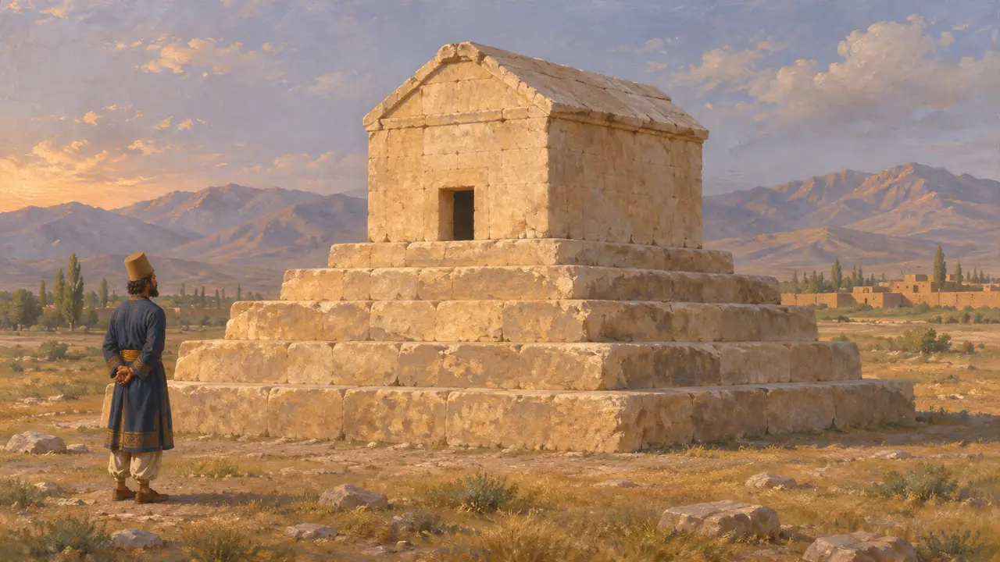

Enciclopédia › Batalhas e eventos

O sepultamento de Ciro
O sepultamento do fundador do império em Pasárgada, na Pérsis, por volta de 530 AEC
No jogo: Nível 1: O Túmulo do Fundador
Ciro morreu em 530, durante uma campanha no extremo nordeste, e tábuas babilônicas mostram Cambises reinando já no final daquele ano. Um túmulo de pedra em Pasárgada, ainda de pé, foi conhecido mais tarde como o local de repouso de Ciro. Nenhum texto da época descreve o funeral, de modo que a história é reconstituída a partir do próprio túmulo e dos autores gregos.
No jogo: O primeiro nível é construído em torno do preparo do túmulo, e depois os magos o guardam; o retorno do corpo segue Ctésias. Heródoto não o menciona, e nenhum texto persa da época registra o funeral.

Como Ciro morreu
DisputadoOs escritores antigos discordam. Heródoto diz que Ciro foi morto lutando contra os masságetas além do Araxes, enquanto Xenofonte o faz morrer em paz, em seu leito, entre os filhos. Ctésias diz que ele morreu de um ferimento recebido contra os derbices e que Cambises enviou o corpo de volta à Pérsia. Ele é o único dos três que descreve claramente o traslado do corpo, e os historiadores não sabem dizer qual versão da morte é verdadeira.
Herodotus 1.214; Ctesias, Persica (in Photius); Xenophon, Cyropaedia 8.7

O túmulo em Pasárgada
Nos registrosO túmulo ergue-se na planície a sudoeste dos palácios. É uma câmara de pedra com telhado de duas águas sobre um pódio de seis degraus, com cerca de 11 metros de altura, construída com grandes blocos de calcário unidos por grampos de metal. A câmara interior é pequena, com pouco mais de 3 metros de comprimento e cerca de 2 de largura, com uma porta baixa, e hoje não traz nenhuma inscrição. Na época medieval, a tradição local o chamava de túmulo da mãe de Salomão.
D. Stronach, Pasargadae, 1978

O que os homens de Alexandre encontraram
Relato antigoArriano, seguindo Aristóbulo, diz que o túmulo ficava em um parque de árvores. No interior havia um caixão de ouro, um leito, uma mesa com taças e vestes finas. Magos montavam guarda, um dever passado de pai para filho desde o tempo de Cambises, e recebiam uma ovelha por dia e um cavalo por mês para sacrificar a Ciro. Em 324 o túmulo já tinha sido saqueado, e Alexandre ordenou que fosse restaurado.
Arrian, Anabasis 6.29; Strabo 15.3.7

Quem a construiu, e quando
DisputadoOs historiadores discutem se Ciro construiu o túmulo em vida ou se Cambises o terminou após a morte dele. A fina alvenaria e os grampos apontam para canteiros lídios e jônios, de modo que provavelmente data de depois da conquista de Sardes. Sob Dario, as tabuletas de Persépolis registram oferendas regulares aos membros falecidos da casa real. Elas mostram que tais cultos existiam, mas não descrevem o funeral de Ciro.
D. Stronach, Pasargadae, 1978; W. Henkelman, The Other Gods Who Are, 2008

A vingança da rainha e o epitáfio
Lenda posteriorHeródoto conta que Tômiris, rainha dos masságetas, mergulhou a cabeça do rei morto num odre de sangue para que ele se saciasse. A história é moldada como uma lição sobre a cobiça da conquista. Escritores posteriores registram um epitáfio em que Ciro pede ao passante que não lhe negue a pouca terra que o cobre. Nenhum vestígio dessa inscrição sobrevive, e ela pode ser uma invenção literária.
Herodotus 1.214; Plutarch, Alexander 69; Strabo 15.3.7
Fontes
- Arrian, Anabasis 6.29
- D. Stronach, Pasargadae, 1978
- Herodotus 1.214
- Ctesias, Persica (in Photius)
- Xenophon, Cyropaedia 8.7
- P. Briant, From Cyrus to Alexander, 2002